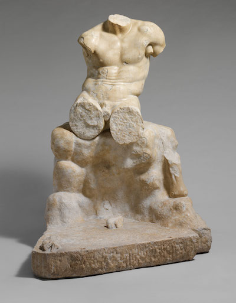

Domino
"Find work through your friends"
Draft
Domino was an audacious attempt to improve how freelancers found great work, predicated on a totally new marketplace model:
Combine a marketplace with a social network, and let jobs move through networks of trusted friends & colleagues.
The idea was simple. Finding it, then building it was anything but.
This led us on a wild 3 year journey, deep into the systemic problems of freelancing, online marketplace mechanics & sociology.
Research
1
1.0
Starting with the problem
As former freelancers, we had first-hand experience with the common problems that new freelancers face. The barriers to entry for freelancing are just too high. Most new freelancers, seeking economic agency, end up worse off than before.
Wanting to move beyond our own personal anecdotes, we began towards the end of 2014 by interviewing over 100 freelancers to learn their challenges & work habits.
1.1
The Root Cause
The responses were diverse, with freelancers citing many different problems. After mapping them out we noticed that the majority are second and third order effects from a single source:
Never learning how to freelance.
No Knowledge
No Confidence
No Promotion
No Sales
No Work
They never learnt to freelance? Sure. Most people conflate their principle skills (design, writing, etc.) with their skill at freelancing (i.e. running a small business). It's a costly and time consuming mistake.
CLOSE
The deeper, often unexpected effects that manifest in response to the original interaction.
Learn More
1.2
Learning by Doing
CLOSE
You learnt best by doing. I can try to teach you how to eat an ice cream, but you're not really going to get it until you eat the damn thing yourself.
Learn More
While the root cause had been identified, the solution wasn’t to write a book. We learn best effectively through personal experiences. In fact, 61% told us they learnt how to freelance through "trial and error".
Well designed systems can also leverage incentives to protect us from our own worst behaviors - an important consideration when freelancers have so little external accountability.
Inverting our perspective, we asked:
"Rather than educating freelancer's to help improve their work prospects, why don't we design a system that improves their work prospects and educates them in the process?"
Most freelancers find jobs online through job boards, social media, or marketplaces, but only the marketplace model gave us the scope to design a complete flow: from job discovery to delivery, that could educate them in the process. Importantly, it also offered the security and reliability craved by employers.
CLOSE
We interviewed dozens of employers to understand their needs. The biggest was reliability: trusting they're hiring the right person, who can do a great job, on time, on budget and is a pleasure to work with.
Learn More
1.3
A Problem, Wrapped In A Solution
While finding consistent work was overwhelmingly the #1 problem, there was a silver lining:
64%
said finding consistent work is a challenge
but
77%
Their best work comes from referrals.
We knew this first hand. As freelancers, our best jobs had always come from our friends, too: it was an existing behavior.
We wondered if a marketplace based around jobs referrals could help freelancers find jobs more consistently, by improving the referral process.
CLOSE
When building products, your chances of success are always higher if you can improve an existing behavior. Trying to create a new behavior is a slow, expensive process.
Learn More
CLOSE
Referrals are great: they're like a social shorthand for quality & trust - but the process of referring sucks. It's slow, takes time, and isn't trackable or recordable in any way, and you have to start the process all over again every time you try and refer a job to someone. It's a real pain in the ass.
Learn More
1.4
The Lay of the Land
After researching the existing marketplaces, we saw two trends:
These online marketplaces were either exclusive with high pay, or inclusive with low pay.
Gigster
Gun
Crew
Toptal
Design Inc
Exclusive
High Pay
Low Pay
Inclusive
Upwork
Freelancer
Guru
99 Designs
Fiverr
There was uncharted space if we could find a way to create an inclusive marketplace that also offered well paying jobs. It would require a new approach to distributing these jobs, and referrals were one possibility.
The "exclusive" or "invite only" marketplaces actually functioned more like traditional product studios. While they did provide well paying jobs, they simply couldn't get enough of them.
What about the larger, inclusive marketplaces? They were something else entirely.
1.5
A great way to find bad jobs
While employers' experiences on these larger marketplaces were mixed, freelancers were almost universally bad: economics subverts the user experience.
1
A global labor pool skews supply.
2
Favoring freelancers with lower costs of living.
3
And depresses wages.
4
Without an artificial price floor.
CLOSE
It's intended to stop prices from falling below a certain amount. The most famous example is the minimum wage.
Learn More
5
Forcing high competition for low paying projects.
Reputation The skewed supply & demand also corrupts a platforms reputation system. With so many freelancers chasing so few jobs, employers can easily filter out freelancers without a perfect reputation and still find plenty of candidates for their project. Conversely, an employer's negative rating will be overlooked by a freelancer desperate for work.
A negative power dynamic can emerge, with an employer holding the threat of a poor rating against a freelancer to extract more work or unfair conditions during a project.
Power Laws & The Pareto Principle The flawed reputation model used by online marketplaces leads to power laws that entrench the top 20% while discouraging the long tail of new and casual freelancers from establishing themselves.
Incentivization Finally, because the employers are the ones with the money, the platform is incentivized to favor them in any dispute. While anecdotal, numerous freelancers we spoke to felt they experienced this (alongside plenty of stories elsewhere ).
CLOSE
The mass of niche ice cream flavors that aren't in high demand individually. Collectively, though, they add up to a large market.
Learn More
CLOSE
Also known as the "80/20 Rule", and an example of a power law in action.
20% of the flavors at my ice cream store make up 80% of all the sales.
Learn More
Sketching the Product
2
2.0
Form through subtraction.
We began defining what Domino would be, by subtracting what it wouldn't:
CLOSE
Defining what something is, by defining what it is not.
An ice cream is not hot. Not square. Not hard. Not bland.
Learn More
+
Hypercompetitive.

+
Using an artificial reputation system.
+
Requiring a large time investment to win jobs.
+
No mechanism to stop unsustainable pricing.
+
A place for cheapskates.
+
Predatory
+
Excess Choice
+
Unvetted
2.1
Friction & Distribution
The freelancers become victims of the platform's success. They're close to perfect, making them lousy places to find good work. Ironically, adding friction could improve things by using referrals & interconnected social groups to intelligently restrict the distribution of jobs to:
1
Reduce competition per job
2
Improve matching for freelancers & employers
3
Give employers new metrics to guide hiring
In the end, employers don't want to be inundated with choice. They just want to be given the right one.
CLOSE
What happens when two objects come into contact, reducing motion. Like frozen ice cream coming into contact with an ice cream scoop.
Learn More
CLOSE
When all competitors are equal, and have no means of differentiation. Like a sea of ice cream shops that sell an identical brand of chocolate ice cream.
Learn More
CLOSE
The quality of a decision is limited by things like time and available knowledge. This means that we are forced to make satisfactory decisions, rather than optimal ones.
Learn More
2.3
Putting the pieces together.
We started mixing and matching different elements together, forming them into equations based on what we'd learnt:
Scroll
Friction
+
Social Job Distribution
=
Natural Price Floor
CLOSE
Creativity comes from taking different ideas from different places and combining them together into new combinations. Like an ice cream hotdog.
Learn More
2.4
Mapmaking
Maps permeate our daily lives as a cognitive shorthand. While incredibly effective, an outdated or incomplete map can trap us inside a false projection of the world. Current marketplaces all follow a similar map:
Eve posts job
1
apply for job
2
Freelancer 1
Freelancer 2
Freelancer 3
Eve awards job
3
Copying them is both boring and bad business. We began creating new maps of business models, user experiences, revenue models, and product strategy - anything that could obsolete the maps they were operating from.
Eve posts job
1
The job is only shared with Eve's friends & recommended freelancers
2
Brian Eno
Peter Schmidt
David Byrne
Only freelancers connected to Eve can apply.
3
And she can see how she's connected to all applicants.
4
CLOSE
Manipulating the real environment in order to obsolete everyone's maps of that environment, except your own.
Learn More
Execution
3
3.0
Community First
Social relationships - trusted groups of friends - were the glue that would bind Domino together. Before writing a single line of code, Chris and I committed to creating a positive community of freelancers.
Neither of us had any experience building online communities before, so we just got to work: we recruited our friends and people we found across Reddit, Twitter & other freelancing-centric sites, and encouraged them to invite their friends.
We opted to create a public Slack group (in early 2015 when this was still a novel idea) and grew to over 2,000 members. They also became invaluable for our user research.
3.1
Product Decisions
A marketplace has a lot of moving parts. Broadly, they can be categorized into two distinct phases:
Discovery
Reputation Sys.
Profiles
Search
Delivery
Project Mgmt
Communication
Billing
Dispute Resolution